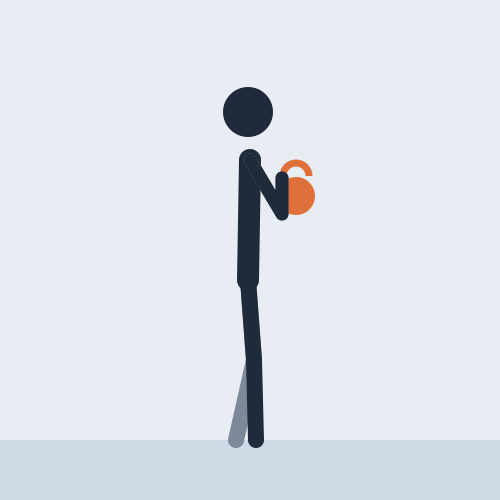
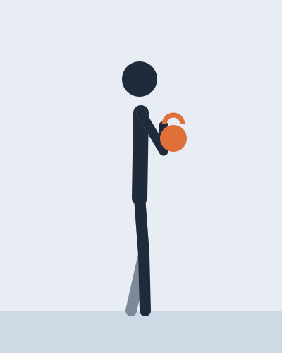
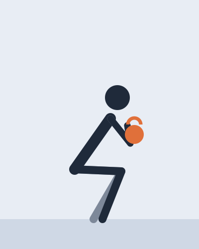
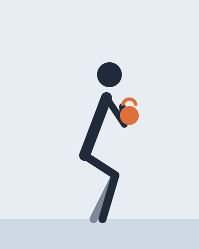
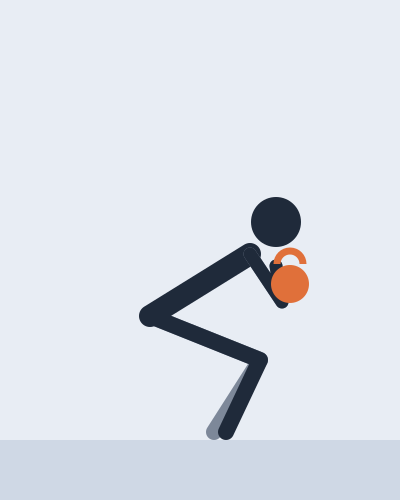

Legs · 5 min

A squat with one weight held against the chest. The weight in front keeps the chest up, which makes it the easiest squat to learn well.
Legs and glutes in one movement, with the trunk working to stay upright. It is also a good way to find a comfortable squat depth before loading a bar.
A demo sheet: on yours, this note says what the video actually gives.

1Feet shoulder-width, toes slightly out, the weight held by its horns under the chin.

2Sit between the heels, knees following the toes, as low as the back stays flat.

3Push the floor away and stand tall, squeezing the glutes at the top.
↻ One rep every three seconds. When the heels start to lift, the set is over.

The weight runs to the toes and the chest drops. Go less deep, or put a thin plate under the heels.